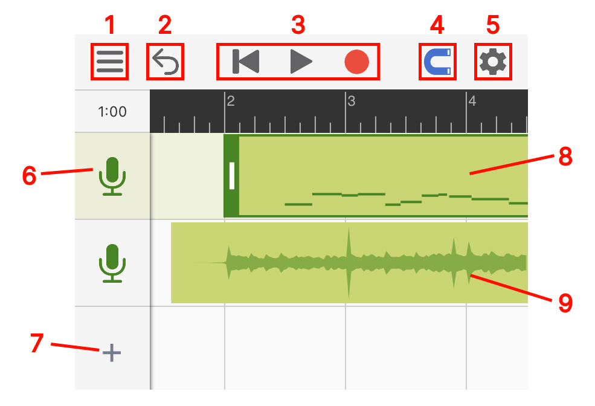
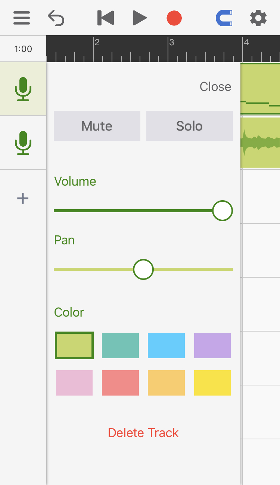
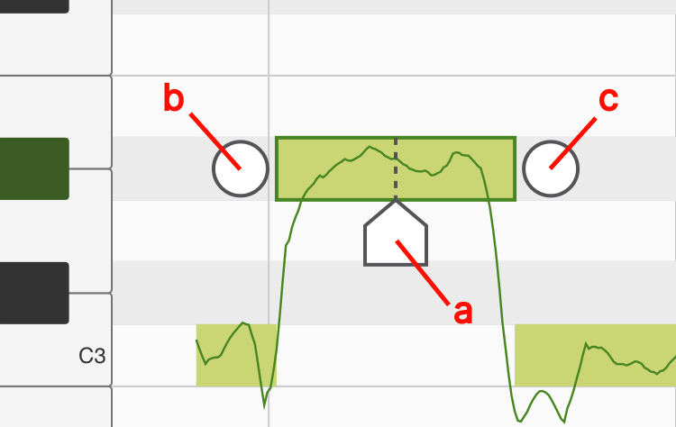
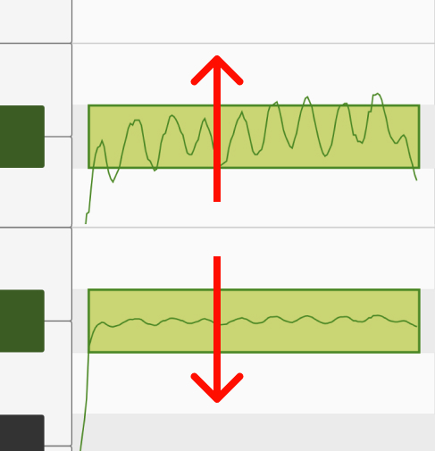
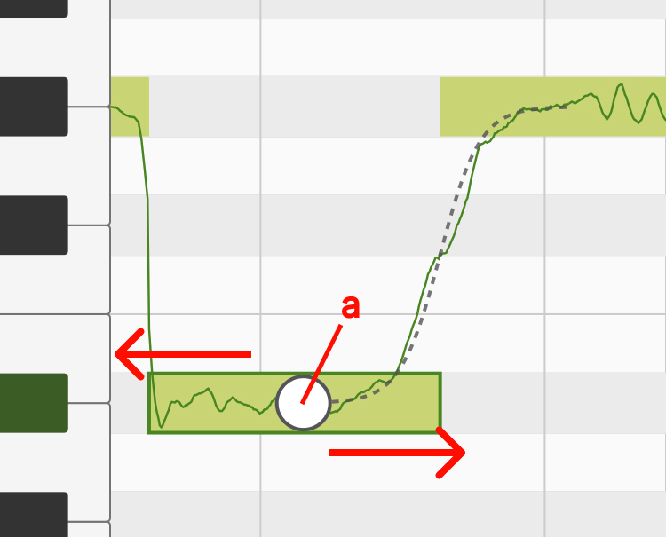
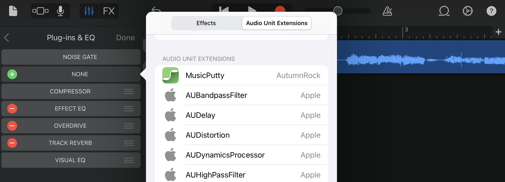
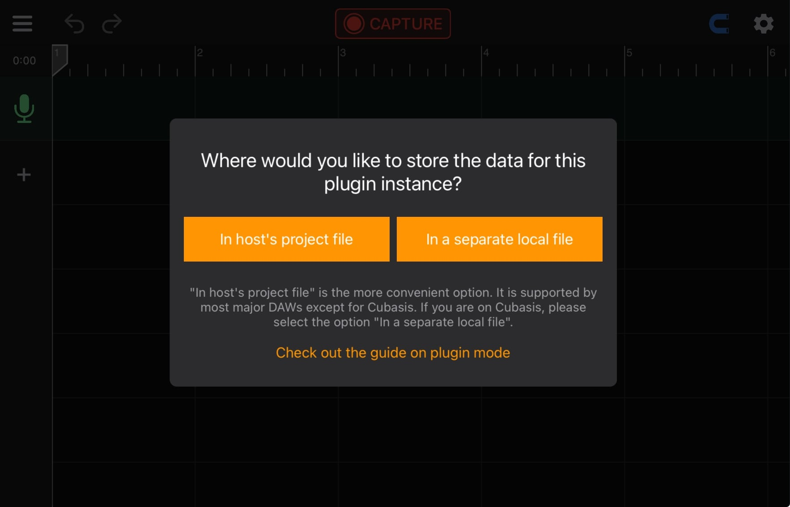
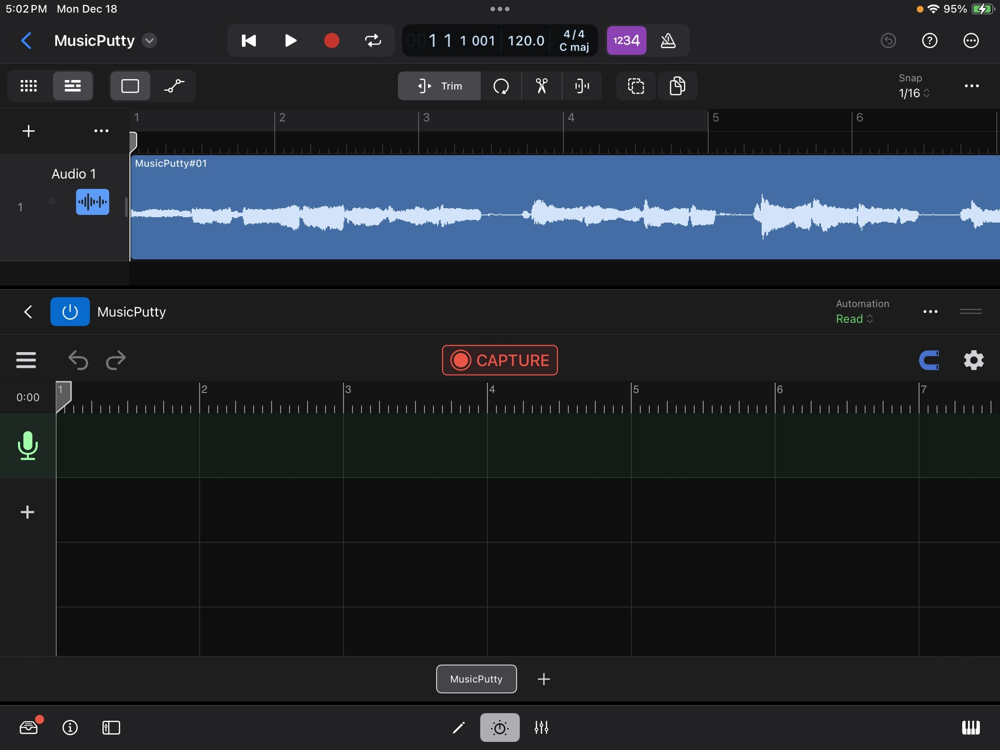
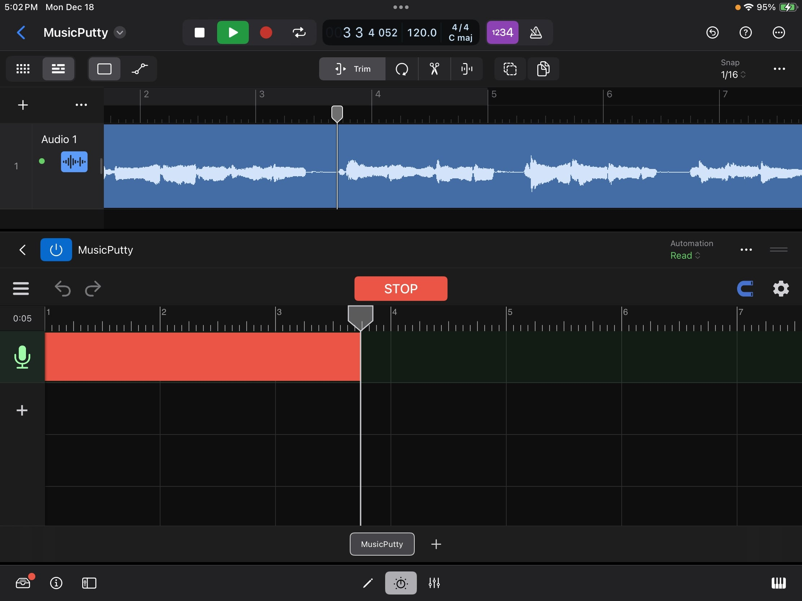
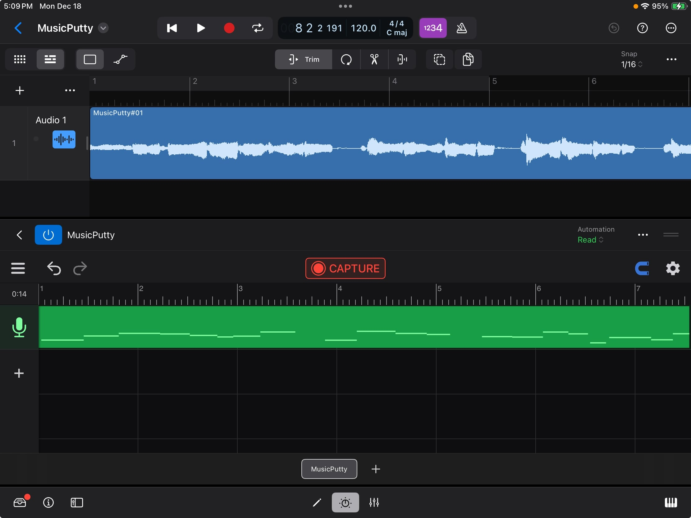

MusicPutty - User Manual
MusicPutty is an advanced note-based pitch editor designed for iOS. The program's algorithm can analyze the pitch information of your vocal takes and give you the ability to edit them note by note. This may sound complicated, but fear not, there are only two main sections in MusicPutty that you need to be aware of. Those are the "Project Window" and the "Pitch Editing Window".
Project Window
The project window is where you can add tracks, record vocal clips and move those clips around across the timeline.

1
Menu: Contains buttons for loading, saving and exporting projects.
2
Undo Button: Use this button to undo any changes you have made to your project. When running on a smaller screen, a redo button will appear when you long-press the undo button; otherwise, the redo button is placed right next to the undo.
3
Cursor Reset, Play and Record.
4
Snap Toggle: Anything you drag will snap to grid once enabled.
5
Settings: Contains controls for metronome, tempo, time signature and live monitoring toggle.
6
Track Icon: Click once to select a track, and twice to open the track's settings panel. Each track's settings panel contains common channel controls such as mute/solo, volume and pan. You can also change the color of a track by clicking on the color picker.

7
Add Track: Click here to add an empty track, import backing tracks or import vocal tracks for analysis and editing. (Note: The ability to import vocal tracks requires a pro version subscription)
8
Vocal Clip: Any vocal takes you record will show up in the project window with a miniature view of all the notes inside. You can double-click on it to open the "Pitch Editing Window".
9
Backing Track: Any backing tracks you have imported will show up as plain audio clips.
Pitch Editing Window
The pitch editing window is where you can view and edit all the notes that have been detected inside your vocal clips. To access this page, double-click on any vocal clips you have recorded in the project window.

1
Pitched Note: The block shows the rough pitch range of the note, and the line within the block shows the exact pitch at a point in time.
2
Unpitched Note: The notes with a lighter color and no pitch lines on top of them represent sections of the audio that don't have a clearly defined pitch. They can be breath, reverberation or ambient noise.
3
Main Tool: With this tool selected, you can drag a note up or down to change its pitch, and left or right to change its position on the timeline.
4
Note Separation Tool: Use this tool to separate one note into multiple notes or merge multiple notes into one.

4.a
Position Handle: Use this handle to set the position where you want to separate the note. Once in place, you can either click on the handle or drag the handle upward to slice the note in half.
4.b
Merge Button (Left): Click here to merge the selected note with the note on its left.
4.c
Merge Button (Right): Click here to merge the selected note with the note on its right.
5
Vibrato Tool (Pro Feature): Use this tool to change the amount of vibrato you want within each note. Once you have the vibrato tool selected, you can drag upward on a selected note to amplify its vibrato and drag downward to flatten its vibrato.

6
Legato Tool (Pro Feature): A legato handle will appear when you click on a note with the legato tool selected. You can change the speed of the transition between two consecutive notes by dragging on this handle.

6.a
Legato Handle: Drag this handle to the left if you want to make the transition between two notes slower, or drag the handle to the right if you want to make the transition faster.
7
Formant Tool (Pro Feature): You can use this tool to create the popular "chipmunk/monster" vocal effect. Formant is a concept that describes the shape of the frequency spectrum within one's voice. A singer with a larger body size would usually have a deeper voice and a frequency spectrum with energy concentrated on the lower frequency. On the other hand, a signer with a smaller body usually has a brighter voice with energy concentrated on a higher frequency. With the formant tool, you can reshape this distribution of energy across the frequency spectrum and create interesting vocal effects.

7.a
Formant Block: When you have the formant tool selected, a transparent block will appear on top of each note. You can drag this transparent block up or down to change the formant of the note it is associated with.
Plugin Mode
With the introduction of version 2.0, MusicPutty can now be loaded as an AUv3 plugin within your preferred DAWs. This eliminates the need to transfer audio tracks back and forth between your DAW and MusicPutty while working on a song. Now, you can access MusicPutty's pitch editing tools directly within your DAW's UI.
Load MusicPutty in DAWs
Once you have recorded vocals inside your DAW, you can load MusicPutty by adding it as an insert effect to the vocal track. The following screenshot shows how to do this in Garageband. For instructions on loading insert effects, please consult your DAW's manual.

When adding MusicPutty to an effect chain, it is recommended that you place MusicPutty as close to the beginning of the effect chain as possible. The only effects that should come before MusicPutty are those meant for cleaning the signal, such as a noise gate or other noise reduction plugins. This ensures MusicPutty can capture a clean signal without any audio effects applied, and it leaves the option open for you to add different effects later down the road.
Select Where to Store Plugin's Data
When setting up a new instance of MusicPutty, the plugin prompts you to select a storage location for its data. You have two choices: either embed the data within the host's project file or save it in an external ".mputty" file. The recommended option is to embed the data in the host's project, which simplifies file management when transferring the project to another device. If you select the other option, you will need to copy both the host's project file along with all the ".mputty" files when transferring your work to a different device. Note that this embedding option is supported by most major DAWs, except for Cubasis. If you are using Cubasis, please choose the other option "store in a separate local file".

Capture Audio from DAWs
Before MusicPutty can process your vocals, it needs to capture them from the DAW. Begin by clicking the 'CAPTURE' button to activate MusicPutty's audio capture mode. Then, place the host's playhead at the start of the vocal clip you want to capture and press the host's play button. MusicPutty will start capturing the audio as it flows through the track's effect chain. Press the 'STOP' button once you have captured everything.

Click on the "CAPTURE" button to put the plugin into audio capture mode.

Move the host's playhead to the start of the vocal clip you would like to capture and hit play. Click "STOP" once you are done.

After the audio has been captured, MusicPutty will start to analyze its pitch content. Once that is done, you can start editing your vocals.
DAW Compatibility Tips
Audio plugins on iOS communicate with their hosts through a protocol known as Audio Unit v3 (AUv3). In practice, AUv3 is a loosely defined standard, and each host interacts with its plugins in slightly different ways. Here are a few things you need to be aware of when running MusicPutty under different hosts
Garageband & Logic Pro
Both Garageband and Logic Pro impose restrictions on when an effect plugin is allowed to output audio. If the DAW does not see any audio clip on one of its tracks, the DAW will stop querying audio from all the plugins inserted on that track. That means when moving or importing clips in MusicPutty, you must make sure the same clips are also moved or imported on the host's timeline. Otherwise, the DAW may think there is nothing to render and stop querying audio from MusicPutty.
Cubasis
On Cubasis, you must select the option 'In a separate local file' when the plugin asks where you would like to store its data. Cubasis can't handle plugins with save file larger than a few megabytes. This limitation is a result of how Cubasis implements its undo system. Every time you open and close a plugin's UI in Cubasis, the DAW saves a copy of the plugin's state onto its undo stack. While this approach worked in the early days when most plugins were basic effects with a few parameters, it doesn't work well for today's complex plugins like MusicPutty. We have communicated this issue to the Cubasis team and will continue to work with them, hopefully have this problem addressed in the future.
Auria & Auria Pro
There is currently a bug in Auria where the DAW does not supply its audio effects with transport information during mixdown and channel freeze. To work around this problem, first, export your MusicPutty project as audio files using the plugin's built-in export feature and place them onto Auria's track. Then, bypass all MusicPutty instances before starting mixdown in Auria. We have communicated this issue to the Auria team and will continue to work with them, hopefully have this problem addressed in the future.
N-Track Studio
N-Track Studio sometimes supplies inaccurate transport information to its plugins. When capturing audio in N-Track Studio, please make sure you set 'Audio Capture Mode' to 'Compatibility Mode'. Otherwise, MusicPutty would interpret those inaccurate transport signals as a jump in the host's playhead and stop an ongoing audio capture prematurely.